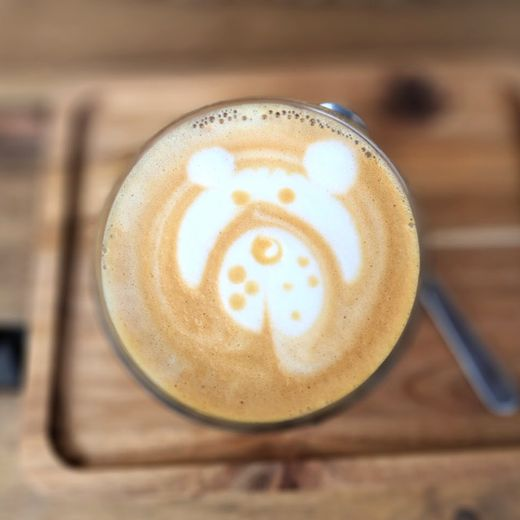
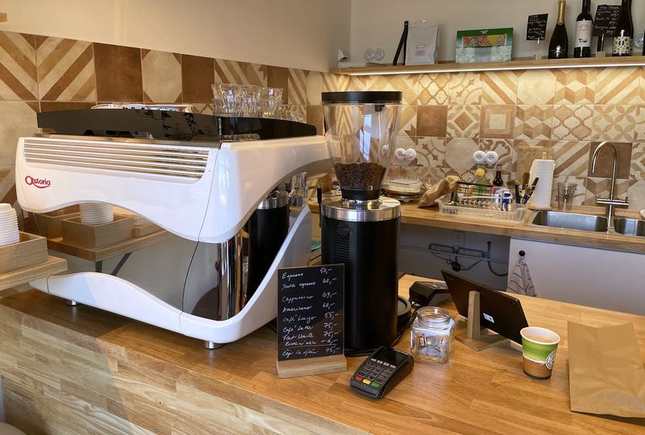
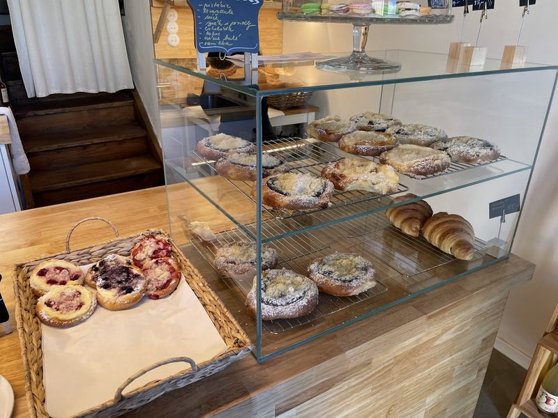
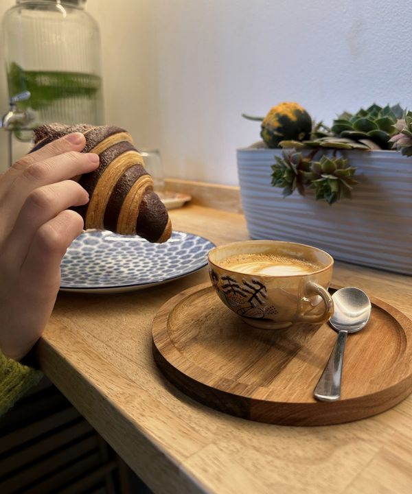
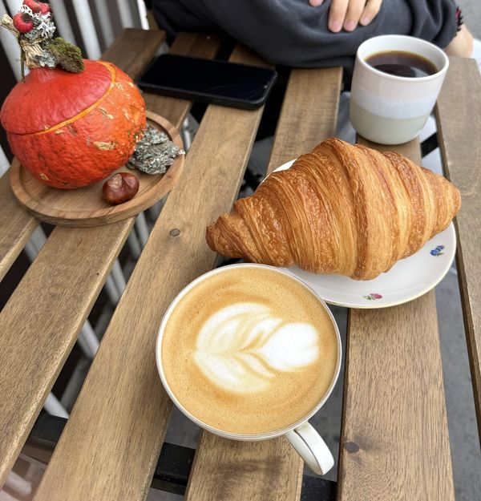
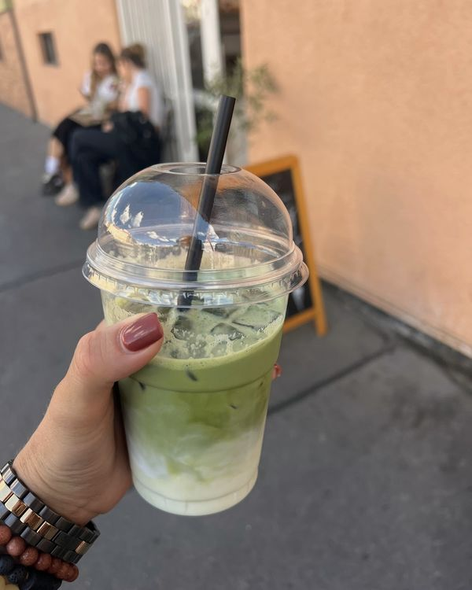
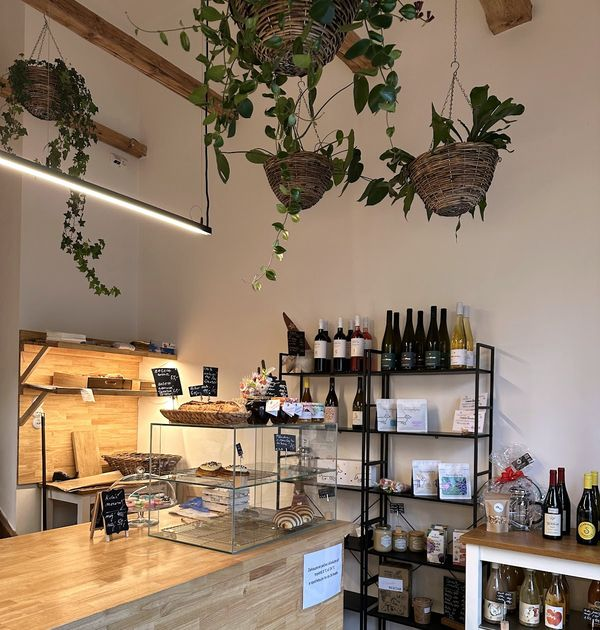
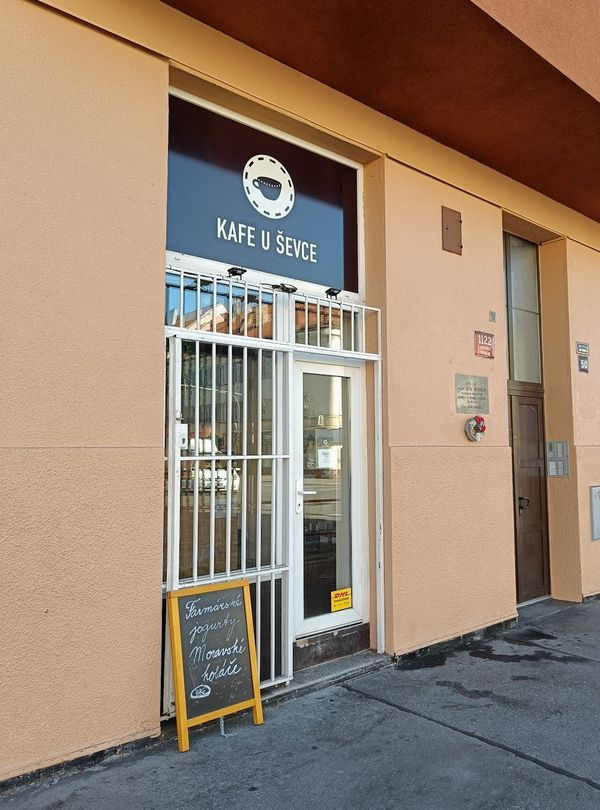

Kafe U Ševce
Otevřeno ve všední dny od 7:30
Malá kavárna ve Strašnicích, hned u tramvajové zastávky. Výběrová káva, moravské koláče, croissanty a snídaně s sebou.
Trasa
Ceník
Káva a čaj
K tomu
Platit můžete kartou. Všechno si můžete vzít i s sebou.

Co je na pultu
Kávu vaříme ze zrn pražírny The Naughty Dog, k ní děláme i matcha latte a batch brew. Ve vitríně jsou moravské koláče, croissanty a kváskový chléb, na policích mošty, džemy, sirupy a víno, k tomu farmářské jogurty. Sníst se to dá u pultu, na lavičce před dveřmi, nebo si to vezmete s sebou k tramvaji.





Co o nás píšete
Josef: „… v puklině tuctového baráku vedle zastávky tramvaje se skrývá prostor, který je vyzdobený rustikálními policemi, na kterých leží vše od výběrové kávy po pečivo a třeba i škvarkovou pomazánku. Kávě ani obsluze rozhodně nejde nic vytknout. Káva je evidentně výběrová a kompetentně připravená a obsluha výmluvná. Jestli jdete kolem, zastavte se; určitě vám přijede i jiná tramvaj.“
Hanka: „Chci moc vyzdvihnout obsluhu – paní, která byla neskutečně milá a ochotná, poradila mi s výběrem kávy a hlavně mi svou energií zlepšila den. Káva skvělá – měla jsem flat white a batch, a k tomu croissant.“
Petr: „Výborný batch brew. V okolí určitě nej kavárna, když chcete kvalitní kávu… a je to hned u zastávky. Pecka! Bylo fajn prohodit pár slov s baristkou.“
Tobiaš: „Ideální místo pro snídani. Krásně zrenovované místo na kavárnu. A jako vnuk ševce pana Lébra rád podpořím. Šel jsem tam s dědou po letech a moc se mu to líbilo.“
Čtyři z 97 recenzí na Googlu, jména jen křestní.
Kde nás najdete
V Olšinách 1122/50, Praha 10 – Strašnice. Vchod s bílou mříží a tabulí na chodníku, vedle zastávky tramvaje.
- Pondělí až čtvrtek7:30–18:00
- Pátek7:30–17:00
- Sobota a nedělezavřeno
Trasa v Mapách Google Novinky na Facebooku
